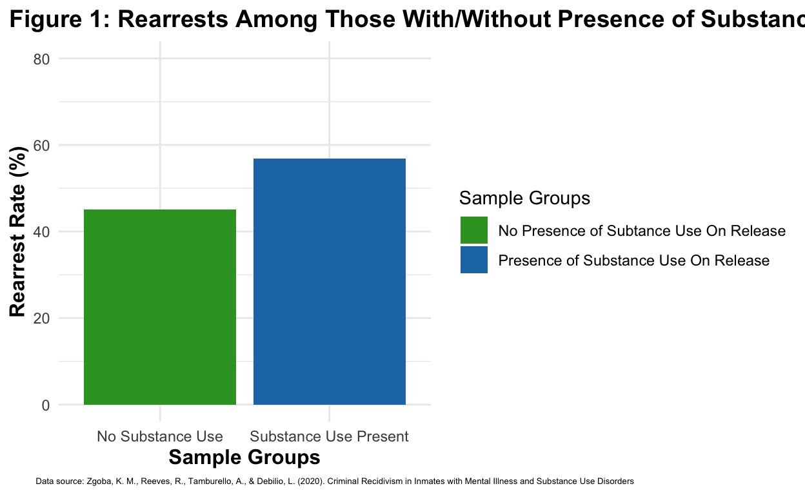
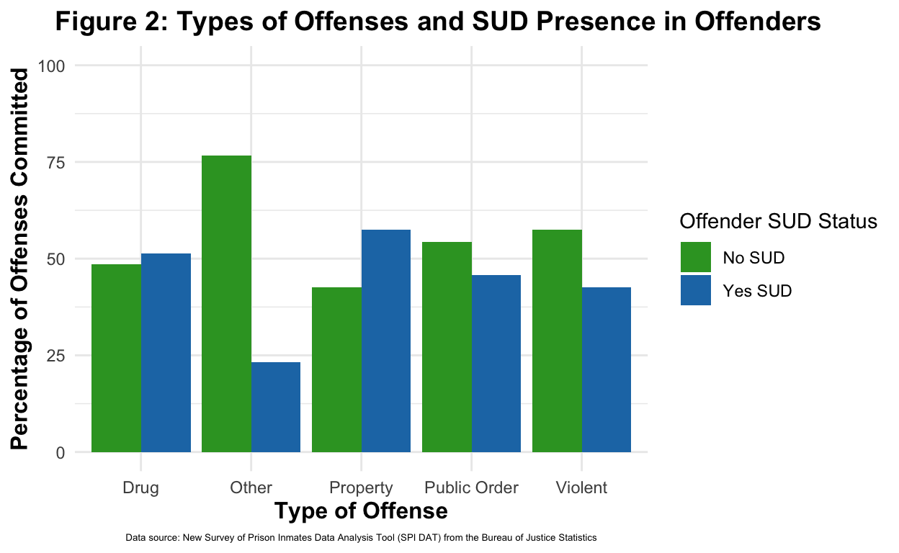
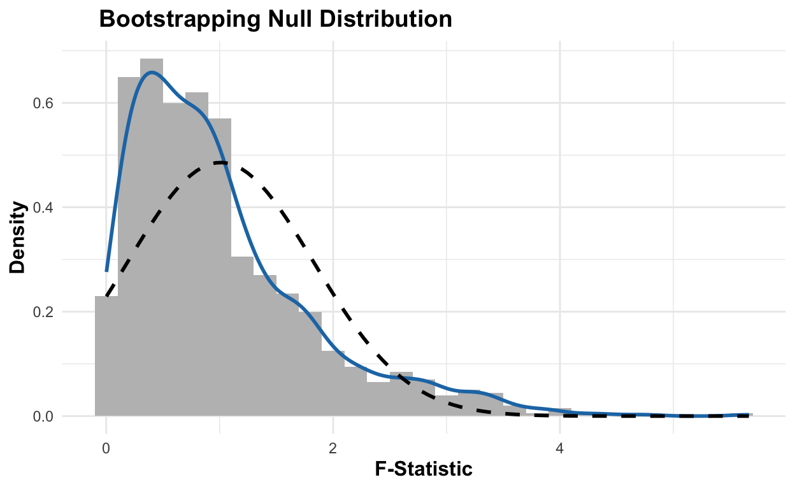

My final project
Mass incarceration and high recidivism rates have defined the American criminal justice system for decades. Expedited by the War on Drugs and perpetuated by the policies and stigmas surrounding incarcerated individuals post-release, it is pertinent to public health that the underlying mechanisms driving such a concern is better understood. Surprisingly, there is a lack of longitudinal research that specifically isolates the relationship between the presence of substance use and the likelihood of recidivism.
Because co-occurring disorders are common, it is difficult to isolate a control group of inmates who have never struggled with substance use and are honest about it. It is even harder to follow this sample across an extended period of time to determine if they re-offended or if they have introduced drugs into their lifestyles. This report seeks to answer the question: how does recidivism vary among those who experience substance use? Further, how does one’s original offense affect their likelihood of recidivism? I take a different route in examining the relationship between substance use and recidivism by focusing on specific crime categories—violent, property, drug, and public order offenses—then analyzing how substance use trends within these categories relate to recidivism.
[explain why these options, not white-collar, organized, or victimless crimes]
My hypothesis assumes that substance use is an underlying mechanism that influences what crime an individual is likely to commit and therefore how likely recidivism is for them. I come to this conclusion by taking into the lifelong ramifications that substance use has on an individual and its interconnected character that affects all aspects of an individual: physical health, mental health, socioeconomic tendancies, behavior, and cognition. Therefore, I predict that those who struggle with substance use are more likely to commit crimes that are likely to be re-offended, resulting in higher rearrest, reincarceration, and reconviction rates of individuals with problematic substance use.
The primary explanatory variable is the presence of substance use in an individual’s life. This can be measured during the screening and assessment process of intake for correctional facilities, drug testing, self-reported surveys, and medical records. These records alone will show variation among the sample, because those incarcerated now or in the past have different histories with substance use along with varying levels of severity when it comes to disorders. This approach must be longitudinal, because we must see changes or lack of changes in substance use over the span of their life before and during incarceration, along with the three years following their release. That way, we can see at what points in time substance use was at its peak in relation to their criminal behavior.
The outcome variable of interest is the rate of recidivism for each individual. This is typically measured by the number of re-arrests, re-convictions, and re-incarcerations that occur within three years of being released from jail/prison, including those released on extended supervision/parole. This data is typically public information.
One observed pattern in the data that would provide support for my hypothesis is higher recidivism rates among those struggling with one or more substance use disorders.
An observed pattern that would disprove my hypothesis is higher recidivism rates among those without the presence of substance use or those with relatively low levels of substance use. This would mean that substance use is not a causal indicator of high recidivism and that there is a confounding variable that has a larger effect on the likelihood that an individual will re-offend. For instance, mental illness, employment, environment, housing, education, etc.
discuss each category of crime and what each entails 1. violent 2. property 3. white-collar 4. organized 5. consensual/victimless
To give a general idea of the relationship between substance users and the likelihood of recidivism, figure 1 reflects the disparity between the rearrest rates of those without the presence of substance use compared to those who do. The independent, or explanatory variable, the presence of substance use, has been measured using 36 months of postrelease records for New Jersey state inmates. The dependent, or outcome, variable has also been measured by using government clinical records. Clinical records has multiple points of sources, likely a combination of screenings, clinical assessments, and documentation from correctional facilities. Statistical analysis also aided the process of organizing the data.
Data source: Zgoba, K. M., Reeves, R., Tamburello, A., & Debilio, L. (2020). Criminal Recidivism in Inmates with Mental Illness and Substance Use Disorders
library(tidyverse)
library(infer)
data_1 <- read_csv("/Users/annieyu/Documents/finalprojectdata.csv")
data_long <- data_1 |>
select(sud_rearrest, no_sud_rearrest) |>
pivot_longer(
cols = sud_rearrest : no_sud_rearrest,
names_to = "variable",
values_to = "value")
dataplot <- ggplot(data_long,
aes(x = variable,
y = value,
fill = variable)) +
geom_bar(stat = "identity") +
labs(title = "Figure 1: Rearrests Among Those With/Without Presence of Substance Use",
x = "Sample Groups",
y = "Rearrest Rate (%)",
caption = "Data source: Zgoba, K. M., Reeves, R., Tamburello, A., & Debilio, L. (2020). Criminal Recidivism in Inmates with Mental Illness and Substance Use Disorders ",
fill = "Sample Groups") +
ylim(0,80) +
scale_x_discrete(labels = c(
"sud_rearrest" = "Substance Use Present",
"no_sud_rearrest" = "No Substance Use")) +
scale_fill_manual(values = c(
"sud_rearrest" = "#1f78b4",
"no_sud_rearrest" = "#33a02c"),
labels = c(
"sud_rearrest" = "Presence of Substance Use On Release",
"no_sud_rearrest" = "No Presence of Subtance Use On Release")) +
theme_minimal() +
theme(panel.background = element_blank(),
plot.caption = element_text(hjust = 0.1, size = 5),
plot.title = element_text(size = 14, face = "bold", hjust = 0.1),
axis.title = element_text(size = 12, face = "bold")
)
dataplot
The second set of data comes from the New Survey of Prison Inmates Data Analysis Tool (SPI DAT) from the Bureau of Justice Statistics. It’s a dynamic tool that allows public access to interact with data visualizations, with custom charts for a range of characteristics of incarcerated individuals in 2016. Figure 2
sud_by_offense <- read_csv("/Users/annieyu/Documents/ps270finalproject/sud_by_offense_2016.csv")
off_data <- sud_by_offense |>
mutate(SUD =
if_else( sud == "Yes", 1, 0))
off_data# A tibble: 10 × 7
Population offense_type sud Perc sd_of_perc
<chr> <chr> <chr> <dbl> <chr>
1 state_and_fed_prisoners violent Yes 42.5 0.89%
2 state_and_fed_prisoners violent No 57.5 0.89%
3 state_and_fed_prisoners property Yes 57.5 1.33%
4 state_and_fed_prisoners property No 42.5 1.33%
5 state_and_fed_prisoners drug Yes 51.4 1.50%
6 state_and_fed_prisoners drug No 48.6 1.50%
7 state_and_fed_prisoners public_order Yes 45.7 1.70%
8 state_and_fed_prisoners public_order No 54.3 1.70%
9 state_and_fed_prisoners other Yes 23.3 5.66%
10 state_and_fed_prisoners other No 76.7 5.66%
# ℹ 2 more variables: weighted_count_of_perc <dbl>, SUD <dbl>off_data_plot <- off_data |>
ggplot(aes(x = offense_type,
y = Perc,
fill = as.factor(SUD))) +
geom_bar(stat = "identity", position = "dodge") +
scale_fill_manual(values = c("0" = "#1f78b4",
"1" = "#33a02c"),
labels = c("No SUD", "Yes SUD")) +
scale_x_discrete(labels = c(
"drug" = "Drug",
"other" = "Other",
"property" = "Property",
"public_order" = "Public Order",
"violent" = "Violent")) +
ylim(0,100) +
labs(
title = "Types of Offenses and SUD Presence in Offenders",
x = "Type of Offense",
y = "Percentage of Offenses Committed",
fill = "Offender SUD Status") +
theme_minimal()
off_data_plot
property crimes are more likely to be committed by those with a substance use disorder (2016). Are recidivism rates for those crimes statistically higher?
raoodata <- read_csv("/Users/annieyu/Documents/ps270finalproject/rearrest_by_original_offense.csv")
raoodata# A tibble: 17 × 13
release_year total_releases_drug total_recid_drug
<dbl> <dbl> <dbl>
1 2000 1530 820
2 2001 1338 709
3 2002 1441 790
4 2003 1637 913
5 2004 1816 960
6 2005 2073 1100
7 2006 1967 1075
8 2007 1884 986
9 2008 1996 1072
10 2009 1727 872
11 2010 1630 845
12 2011 1455 760
13 2012 1303 668
14 2013 1290 657
15 2014 1249 656
16 2015 1238 620
17 2016 1329 720
# ℹ 10 more variables: total_recid_drug_perc <dbl>,
# total_releases_prop <dbl>, total_recid_prop <dbl>,
# total_recid_prop_perc <dbl>, total_releases_pub <dbl>,
# total_recid_pub <dbl>, total_recid_pub_perc <dbl>,
# total_releases_vio <dbl>, total_recid_vio <dbl>,
# total_recid_vio_perc <dbl>raoodata_summary <- raoodata |>
summarize(
"Drug Offenses" = mean(total_recid_drug_perc * 100),
"Property Offenses" = mean(total_recid_prop_perc * 100),
"Public Order Offenses" = mean(total_recid_pub_perc * 100),
"Violent Crime Offenses" = mean(total_recid_vio_perc * 100)) |>
pivot_longer(
cols = everything(),
names_to = "Offense Type",
values_to = "Average Rearrest Rate 3-years Post-Release (%)") |>
knitr::kable(digits = 2)
raoodata_summary| Offense Type | Average Rearrest Rate 3-years Post-Release (%) |
|---|---|
| Drug Offenses | 52.79 |
| Property Offenses | 59.64 |
| Public Order Offenses | 51.02 |
| Violent Crime Offenses | 47.34 |
reconvic_oo <- read_csv("/Users/annieyu/Documents/ps270finalproject/reconviction_by_original_offense.csv")
rc_summary <- reconvic_oo |>
summarize(
"Drug Offenses" = mean(rc_rec_drug_perc * 100),
"Property Offenses" = mean(rc_rec_prop_perc * 100),
"Public Order Offenses" = mean(rc_rec_pub_perc * 100),
"Violent Crime Offenses" = mean(rc_rec_vio_perc * 100)) |>
pivot_longer(
cols = everything(),
names_to = "Offense Type",
values_to = "Average Reconviction Rate 3-years Post-Release (%)") |>
knitr::kable(digits = 2)
rc_summary| Offense Type | Average Reconviction Rate 3-years Post-Release (%) |
|---|---|
| Drug Offenses | 30.81 |
| Property Offenses | 42.41 |
| Public Order Offenses | 33.58 |
| Violent Crime Offenses | 30.91 |
reincarc_oo <- read_csv("/Users/annieyu/Documents/ps270finalproject/reincarceration_by_original_offense.csv")
reincarc_oo# A tibble: 17 × 13
release_year rein_tr_drug rein_rec_drug rein_rec_drug_perc
<dbl> <dbl> <dbl> <dbl>
1 2000 1535 530 0.35
2 2001 1343 487 0.36
3 2002 1444 578 0.4
4 2003 1645 710 0.43
5 2004 1824 733 0.4
6 2005 2078 897 0.43
7 2006 1974 807 0.41
8 2007 1891 650 0.34
9 2008 2005 648 0.32
10 2009 1728 544 0.32
11 2010 1638 530 0.32
12 2011 1458 471 0.32
13 2012 1303 392 0.3
14 2013 1290 399 0.31
15 2014 1249 410 0.33
16 2015 1238 422 0.34
17 2016 1329 511 0.38
# ℹ 9 more variables: rein_tr_prop <dbl>, rein_rec_prop <dbl>,
# rein_rec_prop_perc <dbl>, rein_tr_pub <dbl>, rein_rec_pub <dbl>,
# rein_rec_pub_perc <dbl>, rein_tr_vio <dbl>, rein_rec_vio <dbl>,
# rein_rec_vio_perc <dbl>reincarc_summary <- reincarc_oo |>
summarize(
"Drug Offenses" = mean(rein_rec_drug_perc * 100),
"Property Offenses" = mean(rein_rec_prop_perc * 100),
"Public Order Offenses" = mean(rein_rec_pub_perc * 100),
"Violent Crime Offenses" = mean(rein_rec_vio_perc * 100)) |>
pivot_longer(
cols = everything(),
names_to = "Offense Type",
values_to = "Average Reincarceration Rate 3-years Post-Release (%)") |>
knitr::kable(digits = 2)
rc_summary| Offense Type | Average Reconviction Rate 3-years Post-Release (%) |
|---|---|
| Drug Offenses | 30.81 |
| Property Offenses | 42.41 |
| Public Order Offenses | 33.58 |
| Violent Crime Offenses | 30.91 |
this third visualization shows rearrest rates by original offense from a 3-year follow up study in 2000-2013
note — the most common offenses in property offense is burglary-Biulding or Dwelling, Forgery-Uttering, Misappropriate ID info-Obtain Money, Theft-Movable Property =< $2,500, and Take and Drive Vehicle w/o consent.
Drug Offense: possession of NArcotic Drugs Manufacture/Deliver Heroin <3g Possession of THC (2nd+ Offense) Possess w/Intent - THC (<= 200 grams) Manufacture/Deliver Cocain (<= 1g)
Public Order Offense: Operating While under the Influence (5th or 6th) Possession of Firearm by Felon Operating While Under the Influence (7th, 8th, or 9th) OWI (4th within 5 yrs) Bail Jumping - Felony
Violent Offense: 2nd Degree Sexual Assault of Child Armed Robbery Substantial Battery-Intend Bodily Harm 2nd Degree Recklessly Endangering Safety Battery ## Results
limitations to analysis: lack of longitudinal data following individuals due to HIPPA, lack of knowledge of true nature fo substance use (what drugs are used the most and to what extent)
I am interested in exploring data related to the relationship between the likelihood of recidivism and the presence of substance use.
My research question: How does the presence of substance use affect the likelihood of recidivism after incarceration?
Hypothesis: The presence of substance use increases the likelihood of recidivism due to the cyclical nature of addiction, isolation/difficulty reengaging with society, lack of rehabilitation treatment centers within jail/prison, and punitive nature of sentencing for drug-related crimes.
| Name | Description |
|---|---|
num_male |
number of males in the full sample |
num_females |
number of females in the full sample |
white |
number of racially/ethnically White individuals |
black |
number of racially/ethnically Black individuals |
hispanic |
number of racially/ethnically Hispanic individuals |
single |
number of individuals whose marital status is single |
married |
number of individuals whose marital status is married |
divorced |
number of individuals whose marital status is divorced |
separated |
number of individuals whose marital status is separated |
widowed |
number of individuals whose marital status is widowed |
some_school |
number of individuals who have completed some education |
hs_grad |
number of individuals who have completed high school |
some_col |
number of individuals who have completed some college |
sud_or |
percentage of sample who have shown a presence of substance use on release of incarceration |
no_sud_or |
percentage of sample who have not shown a presence of substance use on release of incarceration |
sud_rearrest |
percentage of sample who have shown a presence of substance use and have gotten rearrested within 36 months of release |
no_sud_rearrest |
percentage of sample who have not shown a presence of substance use and have gotten rearrested within 36 months of release |
The percentage of the sample of who did not show a presence of substance use on release of incarceration had a smaller percentage of individuals who were rearrested within 36 months of release than the group who did show a presence of substance use on release of incarceration. It does not, however, indicate differences in gender or race/ethnicity. It also does not specify what the rearrest charge was or whether it resulted in a re-conviction or return to prison.
WISCONSIN DOC DATASET: SUBSTANCE USE DISORDER PROGRAM REARREST RATES
| Name | Description |
|---|---|
year |
date of release from incarceration |
Treated |
Individuals with a drug history who participated in a substance use treatment program after release of incarceration |
Control |
Individuals with a drug history who did not participate in a substance use treatment program after release of incarceration |
followup_period |
1-Year, 2-Year, or 3-Year post-release check-up on participants |
num_releases |
number of individuals in the study released at a given year |
rearrest_perc |
rearrest rate for individuals in study |
data <- read_csv("/Users/annieyu/Documents/ps270milestone4data.csv")
widata <- data |>
select(year, followup_period, group, rearrest_perc) |>
pivot_wider(
names_from = group,
values_from = rearrest_perc) |>
drop_na()
widataplot <- widata |>
ggplot() +
geom_smooth(aes(x = followup_period,
y = Treated,
color = "Received Treatment Post-Release", group = 1),
method = "lm", se = FALSE) +
geom_smooth(aes(x = followup_period,
y = Control,
color = "No Treatment Post-Release", group = 1),
method = "lm", se = FALSE) +
geom_smooth(aes(x = followup_period,
y = Total,
color = "Total Rearrests in WI", group = 1),
method = "lm", se = FALSE) +
scale_color_manual(values = c(
"Received Treatment Post-Release" = "#1f78b4",
"No Treatment Post-Release" = "#33a02c",
"Total Formerly-Incarcerated Population" = "black")) +
labs(
title = "Rearrest Rates Among WI DOC Substance Use Treatment Participants",
x = "Follow-up Periods",
y = "Rearrest Rate (%)",
color = "Sample Groups",
caption = "Data Source: doc.wi.gov/DataResearch/RecidivismReincarceration/Primary%20Program%20Report_2022_FINAL.pdf") +
ylim(10,60) +
theme_minimal() +
theme(plot.title = element_text(face = "bold"),
axis.title.x = element_text(size = 11, face = "bold"),
axis.title.y = element_text(size = 11, face = "bold"),
plot.caption = element_text(hjust = 0.5, size = 5))
widataplot
The data source, the Wisconsin Department of Corrections Primary Programs Report includes data on individuals who entered substance use treatment after their release from incarceration, specifically within the state. Notably, this does not necessarily mean that those with a drug offense entered these programs and it also does not include every person with a drug history, just those included in the study.
The relationship shown above indicates that those who participated in the program experienced, on average, less rearrests than those with similar drug histories but who did not participate in treatment. The black line provides insight into how this group compares to the overall rearrest rate. The plot emphasizes again, that those experiencing substance use have relatively higher rearrest rates than the formerly incarcerated population as a whole . The periods where the treatment group showed a smaller rearrest rate than that of the total provides valuable insight into the potential of treatment in reducing overall recidivism.
In regards to future research, the upwards progression over time of rearrests for all groups is valuable for identifying at which point treatment should be implemented when it is most effective post-release. There may be underlying mechanisms that accumulate over time and increasingly pull individuals toward criminogenic behavior. This puts into question the need for long-term, sustained interventions that emphasize smooth transition periods.